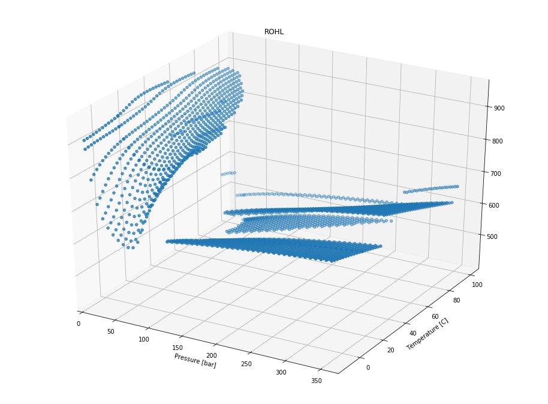

In [2]:
import pandas as pd
import pyfas as fa
6. Tab files¶
A tab file contains thermodynamic properties pre-calculated by a
thermodynamic simulator like PVTsim. It is good practice to analyze
these text files before using them. Unfortunately there are several
file layouts (
key, fixed, with just a fluid, etc.). The
Tab class handles some (most?) of the possible cases but not
necessarily all the combinations.The only public method is
extract_all and returns a pandas
dataframe with the thenrmodynamic properties. At this moment in time
the dtaframe obtained is not unique, it depends on the tab format and
on the number of fluids in the original tab file. Room to improve
here.6.1. Tab file loading¶
In [14]:
tab_path = '../../pyfas/test/test_files/'
fname = '3P_single-fluid_key.tab'
tab = fa.Tab(tab_path+fname)
6.1.1. Extraction¶
In [15]:
tab.export_all()
In [16]:
tab.data
Out[16]:
| "1" | |
|---|---|
| CPG | [1898.12, 1905.92, 1913.71, 1921.51, 1929.3, 1... |
| CPHL | [1610.0, 1617.06, 1623.76, 1630.02, 1635.79, 1... |
| CPWT | [3454.74, 3458.93, 3463.33, 3467.94, 3472.76, ... |
| DROGDP | [8.4946e-06, 8.42111e-06, 8.34888e-06, 8.27788... |
| DROGDT | [-0.000323057, -0.000317492, -0.00031207, -0.0... |
| DROHLDP | [4.47091e-07, 4.5376e-07, 4.60533e-07, 4.67363... |
| DROHLDT | [-0.694011, -0.693068, -0.691885, -0.69043, -0... |
| DROWTDP | [5.24381e-07, 5.22483e-07, 5.1907e-07, 5.14565... |
| DROWTDT | [0.158913, 0.142489, 0.120409, 0.0942844, 0.06... |
| HG | [-19279.3, -14920.5, -10543.9, -6149.34, -1736... |
| HHL | [-317877.0, -313080.0, -308335.0, -303637.0, -... |
| HWT | [-1395510.0, -1387580.0, -1379650.0, -1371710.... |
| PT | [10000.0, 10000.0, 10000.0, 10000.0, 10000.0, ... |
| ROG | [0.0849146, 0.0841808, 0.0834595, 0.0827506, 0... |
| ROHL | [899.718, 900.424, 901.309, 902.434, 903.838, ... |
| ROWT | [813.363, 812.66, 811.929, 811.17, 810.382, 80... |
| RS | [0.999977, 0.999979, 0.99998, 0.999982, 0.9999... |
| RSW | [0.000692485, 0.000692485, 0.000692484, 0.0006... |
| SEG | [1185.33, 1201.82, 1218.24, 1234.58, 1250.85, ... |
| SEHL | [-587.526, -570.743, -554.118, -537.594, -521.... |
| SEWT | [-4115.44, -4085.47, -4055.71, -4026.17, -3996... |
| SIGGHL | [0.0280944, 0.0280288, 0.0279906, 0.0279847, 0... |
| SIGGWT | [0.0698809, 0.0690383, 0.0682086, 0.0673915, 0... |
| SIGHLWT | [0.0551154, 0.0550872, 0.0550879, 0.0551306, 0... |
| TCG | [0.0277744, 0.028032, 0.0282904, 0.0285496, 0.... |
| TCHL | [0.0969043, 0.0960938, 0.0953334, 0.094616, 0.... |
| TCWT | [0.548681, 0.553425, 0.558072, 0.562624, 0.567... |
| TM | [-10.0, -7.70833, -5.41667, -3.125, -0.833333,... |
| VISG | [1.01832e-05, 1.02634e-05, 1.03434e-05, 1.0423... |
| VISHL | [0.220481, 0.227562, 0.234135, 0.240676, 0.247... |
| VISWT | [0.0010661, 0.00101649, 0.000970794, 0.0009286... |
Some key info about the tab file are provided as tab.metadata
In [17]:
tab.metadata
Out[17]:
{'fluids': [' "1"'],
'nfluids': 1,
'p_array': array([ 1.00000000e+04, 1.01325000e+05, 7.38958000e+05,
1.46792000e+06, 2.19688000e+06, 2.92583000e+06,
3.65479000e+06, 4.38375000e+06, 5.11271000e+06,
5.84167000e+06, 6.57063000e+06, 7.29958000e+06,
8.02854000e+06, 8.75750000e+06, 9.48646000e+06,
1.02154000e+07, 1.09444000e+07, 1.16733000e+07,
1.24023000e+07, 1.31313000e+07, 1.38602000e+07,
1.45892000e+07, 1.53181000e+07, 1.60471000e+07,
1.67760000e+07, 1.75050000e+07, 1.82340000e+07,
1.89629000e+07, 1.96919000e+07, 2.04208000e+07,
2.11498000e+07, 2.18788000e+07, 2.26077000e+07,
2.33367000e+07, 2.40656000e+07, 2.47946000e+07,
2.55235000e+07, 2.62525000e+07, 2.69815000e+07,
2.77104000e+07, 2.84394000e+07, 2.91683000e+07,
2.98973000e+07, 3.06263000e+07, 3.13552000e+07,
3.20842000e+07, 3.28131000e+07, 3.35421000e+07,
3.42710000e+07, 3.50000000e+07]),
'p_points': 50,
'properties': ['PT',
'TM',
'ROG',
'ROHL',
'ROWT',
'DROGDP',
'DROHLDP',
'DROWTDP',
'DROGDT',
'DROHLDT',
'DROWTDT',
'RS',
'RSW',
'VISG',
'VISHL',
'VISWT',
'CPG',
'CPHL',
'CPWT',
'HG',
'HHL',
'HWT',
'TCG',
'TCHL',
'TCWT',
'SIGGHL',
'SIGGWT',
'SIGHLWT',
'SEG',
'SEHL',
'SEWT'],
't_array': array([ -10. , -7.70833 , -5.41667 , -3.125 , -0.833333,
1.45833 , 3.75 , 6.04167 , 8.33333 , 10.625 ,
12.9167 , 15.2083 , 15.56 , 17.5 , 19.7917 ,
22.0833 , 24.375 , 26.6667 , 28.9583 , 31.25 ,
33.5417 , 35.8333 , 38.125 , 40.4167 , 42.7083 ,
45. , 47.2917 , 49.5833 , 51.875 , 54.1667 ,
56.4583 , 58.75 , 61.0417 , 63.3333 , 65.625 ,
67.9167 , 70.2083 , 72.5 , 74.7917 , 77.0833 ,
79.375 , 81.6667 , 83.9583 , 86.25 , 88.5417 ,
90.8333 , 93.125 , 95.4167 , 97.7083 , 100. ]),
't_points': 50}
6.1.2. Plotting¶
Here under an example of a 3D plot of the liquid hydropcarbon viscosity
In [48]:
import matplotlib.pyplot as plt
from mpl_toolkits.mplot3d import Axes3D
import itertools as it
def plot_property_keyword(pressure, temperature, thermo_property):
fig = plt.figure(figsize=(16, 12))
ax = fig.add_subplot(111, projection='3d')
X = []
Y = []
for x, y in it.product(pressure, temperature):
X.append(x/1e5)
Y.append(y)
ax.scatter(X, Y, thermo_property)
ax.set_ylabel('Temperature [C]')
ax.set_xlabel('Pressure [bar]')
ax.set_xlim(0, )
ax.set_title('ROHL')
return fig
In [49]:
plot_property_keyword(tab.metadata['p_array'],
tab.metadata['t_array'],
tab.data.T['ROHL'].values[0])
Out[49]:
